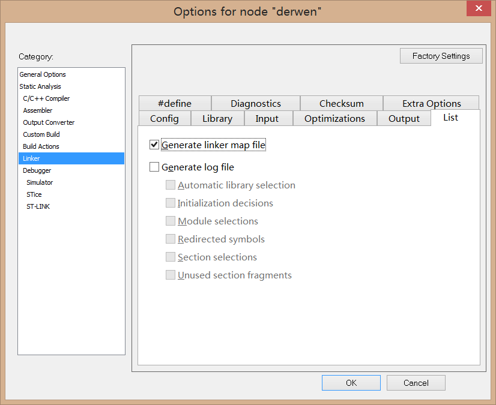

# Keil C51 编译器
1、首先，在 Options ----> Target ----> Memory Model 里可以设置变量分配的空间，如图示：
- Small：变量默认分配到内部存储空间中，通过普通的 MOV 指令寻址，只用低于 2K 的程序空间。
- Compact：变量默认分配到外部页存储空间中，单个函数的代码量不能超过 2K，整个程序可以使用 64K 的程序空间，通过 MOVX, @Ri 之类指令寻址，在不切换页的前提下，最大支持 256 字节外部扩展 RAM。
- Large：变量默认分配到外部存储空间中，通过 MOVX, @DPTR 之类指令寻址，最大支持 64kB 外部扩展 RAM（实际上配合硬件设计以及软件调整，还可以支持更大的扩展空间）。
2、程序中，如果在变量声明时未声明变量的存储器类型，则该变量的存储器类型，由程序的存储模式来决定，也就是说编译器会根据我们在上面 Memory Model 里所选的模式默认储存在那个区域。
3、各分配区域的理解
data：直接寻址的片内 RAM 区低 128B（00H~7FH） , 可以用 acc 直接读写的，速度最快，生成的代码也最小。
bdata：片内 RAM 的可位寻址区（20H~2FH），允许字节和位混合访问
idata：单片机间接访问的片内 RAM 区，允许访问全部片内 RAM（前面 0x00-0xff 的 256 个 RAM）, 其中前 128 和 data 的 128 完全相同，只是因为访问的方式不同。idata 是用类似 C 中的指针方式访问的。汇编中的语句为：mox ACC,@Rx.(不重要的补充：C 中 idata 做指针式的访问效果很好)
pdata：Ri 间接访问的片外 RAM 的低 256B（00H~FFH）
xdata：外部扩展 RAM，用 DPTR 间接访问片外 RAM，允许访问全部 64KB 片外 RAM（0000H~FFFFH）
code：单片机的 64KB 程序存储区 ROM，即代码域，它指的是编译器生成的机器指令，这些内容被存储到 ROM 区，写入后就不能再更改，一般当你定义数组不用更改时可以加上这个关键词，对应的 data 是存入 RAM 的意思
4、如下图所示，编译出来的 “Program Size: data=10.3 xdata=588 code=8732” ，对应的数值就是该区域所占用的空间大小
5、根据上面的信息，可以得知以下的 Flash 和 RAM 占用的空间大小，至于不知道为什么在 data 数据区域内有小数点，估计是因为 51 内核的单片机是 8bit 的，并且支持 bit 数据类型，像我们平时一般定义标志位 flag 都是创建 bit 位的，而在这里显示数据，都是以 Byte 为单位的；估计是因为这样的原因吧；如果有哪个大佬知道，可以说明一下。
- Flash = Code + data + xdata
- RAM = data + xdata
# Keil MDK-Arm 编译器
1、同样是 Keil 编译器，MDK 相对于 C51，在 Options ----> Target 里并没有 Memory Model 的设置，用的比较多的是下面的这个配置
这个是程序存储在片内、片外的地址设置（一般下载程序都是下载到片内 FLASH），我们也不用怎么去更改它；只有在项目做大了，或有特殊要求时，片内不够使用了才将程序存储在片外
2、数据类型的理解
Code：即代码域，它指的是编译器生成的机器指令，这些内容被存储到 ROM 区。
RO-data：Read Only data，即只读数据域，它指程序中用到的只读数据，这些数据被存储在 ROM 区，因而程序不能修改其内容。例如 C 语言中 const 关键字定义的变量就是典型的 RO-data。
RW-data：Read Write data，即可读写数据域，它指初始化为 “非 0 值” 的可读写数据，程序刚运行时，这些数据具有非 0 的初始值，且运行的时候它们会常驻在 RAM 区，因而应用程序可以修改其内容。例如 C 语言中使用定义的全局变量，且定义时赋予 “非 0 值” 给该变量进行初始化。
ZI-data：Zero Initialie data，即 0 初始化数据，它指初始化为 “0 值” 的可读写数据域，它与 RW-data 的区别是程序刚运行时这些数据初始值全都为 0，而后续运行过程与 RW-data 的性质一样，它们也常驻在 RAM 区，因而应用程序可以更改其内容。例如 C 语言中使用定义的全局变量，且定义时赋予 “0 值” 给该变量进行初始化 (若定义该变量时没有赋予初始值，编译器会把它当 ZI-data 来对待，初始化为 0)；
ZI-data 的栈空间 (Stack) 及堆空间 (Heap)：在 C 语言中，函数内部定义的局部变量属于栈空间，进入函数的时候从向栈空间申请内存给局部变量，退出时释放局部变量，归还内存空间。而使用 malloc 动态分配的变量属于堆空间。在程序中的栈空间和堆空间都是属于 ZI-data 区域的，这些空间都会被初始值化为 0 值。编译器给出的 ZI-data 占用的空间值中包含了堆栈的大小 (经实际测试，若程序中完全没有使用 malloc 动态申请堆空间，编译器会优化，不把堆空间计算在内)。
3、对比 C51 的，显示的数据类型多了那么几项；那么，根据上面的数据理解，就可以得到：
- Flash = Code + RO-data + RW-data
- RAM = RW-data + ZI-data
# IAR For STM8 (EWSTM8) 编译器
1、IAR 查看编译后内存大小不会像 Keil 那样在编译完直接在 Build 窗口显示出来，需要我们去 Options for node 里面设置一下，具体操作 Options for node ----> Linker ----> List ----> 把 Generate linker map file 打勾；如图：

2、根据上面的操作，设置完后编译，在工作空间窗口 Output 文件下可以找到 .map 的文件，点击打开，在末尾可以看到目标代码占用的空间大小，如图所示：
- Flash = readonly code memory + readonly data memory
- RAM = readwrite data memory
括号内的，表示内存的绝对使用量，对应你设的全局变量大小；对应生成的 bin 文件大小 = 5590 + 168
# Keil 下的 .map 文件
实际上在 keil 下也是可以找到 .map 编译信息的，在 Options ----> Listings 里：
如此操作，就可以在 Select Folder for Listings... 设置的文件夹里找到 .map 编译信息文件了。
# 优化
一般每个编译器都有优化选项，对应选择不同的优化等级，你会发现同样的代码，编译出来的占用内存大小是不同的，再细心一点同样可以发现存放在 RAM 区域的内存大小是不会怎么变化的，变化较大的是存在 Flash 区域的内存，所以一般的不会定义全局变量（除非真的要用到），并且全局变量处理起来比较麻烦；另外，开了优化后，如果进入调试，可能有些地方会放不了小红点（打断点），因为编译器根据你所选的优化等级，把对应的代码给优化了。